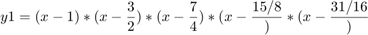
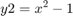
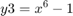
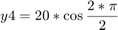

EE254 Project 4: Root Finding Methods - Connor McGarty, cmcgarty
The purpose of this project is to compare the iteration number and accuracy of different numerical methods for finding roots. The methods are the following:
Closed Methods: * Bisection * False Position Open Methods: * Fixed Point * Newton Raphson * Secant
Below are the functions used for test:    
Contents
Solution
format compact;clear;clc; syms x; y1 = (x-1)*(x-(3/2))*(x-(7/4))*(x-(15/8))*(x-(31/16)); y2 = x^2 - 1; y3 = x^6 - 1; y4 = 20*cos((x*pi)/2); y5 = -exp(x+1); threshold = 0.001; xmin = 0; xmax = 2; n_max = 1000; fprintf("Method\tFxn\t\tIdeal\tApprox\tf(x)\t|e_a|\tIterations\n"); fprintf("==================================================================================\n"); %for i = [1:5] for i = [1:4] switch i case 1 f = y1; name = 'Poly'; case 2 f = y2; name = 'x^2 - 1'; case 3 f = y3; name = 'x^6 - 1'; case 4 f = y4; name = 'cosine'; case 5 f = y5; name = '-e^(x+1)'; end % bisection method = "Bisect"; [approx, e_a, actual, y, iter] = ... Bisection_by_symbolic(f, x, xmin, xmax, threshold, n_max); fprintf("%s\t%s\t%0.4f\t%0.4f\t%0.4f\t%0.4f\t%.0f\n", method, name, actual(1), approx, y, e_a(1), iter); fprintf("----------------------------------------------------------------------------------\n"); % false position method = "FaPos"; [approx, e_a, actual, y, iter] = False_Position_by_symbolic(f, x, xmin, xmax, threshold, n_max); fprintf("%s\t%s\t%0.4f\t%0.4f\t%0.4f\t%0.4f\t%.0f\n", method, name, actual(1), approx, y, e_a(1), iter); fprintf("----------------------------------------------------------------------------------\n"); % fixed point method = "FixPnt"; [approx, e_a, actual, y, iter] = ... Fixed_point_by_symbolic(f,x,threshold,n_max); fprintf("%s\t%s\t%0.4f\t%0.4f\t%0.4f\t%0.4f\t%.0f\n", method, name, actual(1), approx, y, e_a(1), iter); fprintf("----------------------------------------------------------------------------------\n"); % newton-raphson method = "NR"; [approx, e_a, actual, y, iter] = ... Newton_Raphson_by_symbolic(f,.1,threshold,n_max); fprintf("%s\t\t%s\t%0.4f\t%0.4f\t%0.4f\t%0.4f\t%.0f\n", method, name, actual(1), approx, y, e_a(1), iter); fprintf("----------------------------------------------------------------------------------\n"); % secant method = "Sec"; [approx, e_a, actual, y, iter] = ... Secant_by_symbolic(f,2*rand(1),.01,threshold,n_max); fprintf("%s\t\t%s\t%0.4f\t%0.4f\t%0.4f\t%0.4f\t%.0f\n", method, name, actual(1), approx, y, e_a(1), iter); fprintf("----------------------------------------------------------------------------------\n"); end
Method Fxn Ideal Approx f(x) |e_a| Iterations ================================================================================== Bisect Poly 1.0000 1.0000 0.0000 0.0000 1 ---------------------------------------------------------------------------------- FaPos Poly 1.0000 1.9482 0.0001 0.9482 1000 ---------------------------------------------------------------------------------- FixPnt Poly 1.0000 1.5000 -0.0000 0.5000 1000 ---------------------------------------------------------------------------------- NR Poly 1.0000 0.9997 -0.0001 0.0003 7 ---------------------------------------------------------------------------------- Sec Poly 1.0000 1.9375 0.0000 0.9375 1000 ---------------------------------------------------------------------------------- Bisect x^2 - 1 1.0000 1.0000 0.0000 0.0000 1 ---------------------------------------------------------------------------------- FaPos x^2 - 1 1.0000 0.9991 -0.0018 0.0009 7 ---------------------------------------------------------------------------------- FixPnt x^2 - 1 1.0000 -1.0220 0.0444 2.0220 1000 ---------------------------------------------------------------------------------- NR x^2 - 1 1.0000 1.0000 0.0000 0.0000 6 ---------------------------------------------------------------------------------- Sec x^2 - 1 1.0000 1.0002 0.0004 0.0002 3 ---------------------------------------------------------------------------------- Bisect x^6 - 1 1.0000 1.0000 0.0000 0.0000 1 ---------------------------------------------------------------------------------- FaPos x^6 - 1 1.0000 0.9990 -0.0058 0.0010 91 ---------------------------------------------------------------------------------- FixPnt x^6 - 1 1.0000 Inf Inf Inf 1000 ---------------------------------------------------------------------------------- NR x^6 - 1 1.0000 1.0000 0.0001 0.0000 57 ---------------------------------------------------------------------------------- Sec x^6 - 1 1.0000 1.0007 0.0042 0.0007 39 ---------------------------------------------------------------------------------- Bisect cosine 1.0000 1.0000 0.0000 0.0000 1 ---------------------------------------------------------------------------------- FaPos cosine 1.0000 1.0000 0.0000 0.0000 1 ---------------------------------------------------------------------------------- FixPnt cosine 1.0000 -19382.0000 -20.0000 19383.0000 1000 ---------------------------------------------------------------------------------- NR cosine 1.0000 7.0000 -0.0000 6.0000 1000 ---------------------------------------------------------------------------------- Sec cosine 1.0000 0.9992 0.0254 0.0008 1 ----------------------------------------------------------------------------------